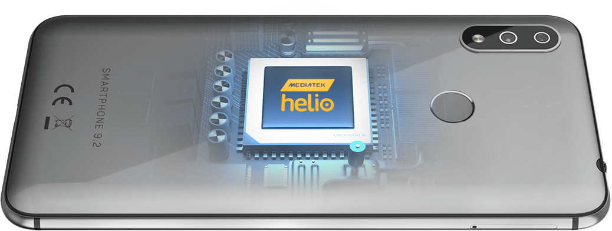

Smartphone 9.2
optimizazovan5.86" HD + screen | 4GB RAM
2.0 GHz octa-core | 3000 mAh
Smartphone 9.2
optimizazovan5.86" HD + screen | 4GB RAM
2.0 GHz octa-core | 3000 mAh

5.86" HD+ ekran 19:9 sa 16 miliona boja

MediaTek Helio P22 MTK6762 2.0 GHz Octa-core

4GB RAM 32GB Interna memorija + slot za Micro SD do 256GB

Android 8.1 Oreo
3000 mAh QuickCharge tehnologija

Hybrid SIM slot (Micro SIM + Nano SIM)

Dual kamera 16MP + 5MP Prednja kamera 16MP
Srebrna i crna boja
Prvi Tesla telefon sa notch ekranom pruža potpuno novi doživljaj u odnosu na svoje prethodnike. Notifikacioni bar se krije u ovom dodatnom prostoru ekrana što vam pruža više prostora za sve ostalo. Dijagonala ekrana je 5.86" što je naša najveća dijagonala do sada. HD+ i 16 miliona boja učiniće da svaki detalj na ovom velikom ekranu oživi.

Novi unapređeni procesor MediaTek Helio P22 MTK6762 sa osam jezgara (4* A53 Cortex@2.0 GHz + 4* A53 Cortex@1.5 GHz) i radna memorija koju ovaj telefon poseduje, izazivaće vas da pokrećete veliki broj zahtevnih aplikacija i brzo surfujete po netu, a optimizovan je da troši manje baterije.
Podršku procesoru daje radna memorija od 4GB koja omogućava neometan rad zahtevnih aplikacija. Tesla Smartphone 9.2 dolazi sa 32GB interne memorije i mogućnošću proširenja do 256GB uz memorijsku karticu. Uz takvo povećanje imaćete prostora da čuvate mnoštvo slika, video snimaka i muzike.
Hybrid SIM slot omogućava da koristite dve SIM kartice istovremeno, od kojih je jedna Micro SIM a druga Nano SIM (obe sa 4G tehnologijom) ili kombinaciju Micro SIM kartice i Micro SD memorijske kartice.
Sve funkcionalnosti optimizovanog Android 8.1 Oreo operativnog sistema, savršeno se uklapaju sa Tesla Smartphone 9.2 konfiguracijom i pružaju neuporedivo korisničko iskustvo. Oreo je prilagodljiv i u potpunosti se može podesiti – od pozicioniranja virtuelnih tastera, do toga da se oni u potpunosti zamene „svajpovanjem“.
Sa zadnje strane pravi jasnije fotografije širokog kadra, u rezoluciji do 4672x3504px, pomoću optike od 16MP + 5MP koja ima 4X digitalni zoom, a uz to i snima video u Full HD-u.
Od 16MP takođe pravi fotografije u rezoluciji do 4672x3504px. Ima blic i opciju za slikanje širokog selfija koja omogućava da u kadar uključite što više prijatelja. Kao i zadnja, i prednja kamera snima video u Full HD-u.
Vam pružaju još više nego podrazumevana podešavanja – brojne filtere, podešavanja za boju i kontrast, bolje slikanje u uslovima slabijeg osvetljenja i još mnogo toga.
Opcija vam daje priliku da snimite video po velikom broju fps-a (brzina smenjivanja slika), zbog čega, pri reprodukciji na uobičajenih 30fps, video se prikazuje usporeno. Ova tehnologija parira i najboljim telefonima na tržištu.
Video opcija vam omogućava da scene koje se sporo kreću, poput oblaka, reprodukujete tako da deluju ubrzano.
Tesla Smartphone 9.2 ima poboljšanu bateriju kapaciteta 3000 mAh, koja će vam biti prijatelj u svim aktivnostima u toku dana. Brzo punjenje omogućava da za samo 30 minuta napunite telefon do 30% što će vam produžiti korišćenje za nekoliko sati. Uz to, Reverse Charging omogućava da ovaj telefon koristite kao prenosivu bateriju za punjenje drugih uređaja.
Sve ove pogodnosti su spakovane u telefon debljine samo 7.9 mm koji dolazi u srebrnoj i crnoj boji.
Tesla Smartphone 9.2 ima najnoviji Bluetooth 5.0, senzor za otisak prsta koji pojačava bezbednost i služi kao zgodno dugme za slikanje selfija. Uz ovaj telefon se, između ostalog, dobijaju slušalice, silikonska maska i zaštita za staklo.